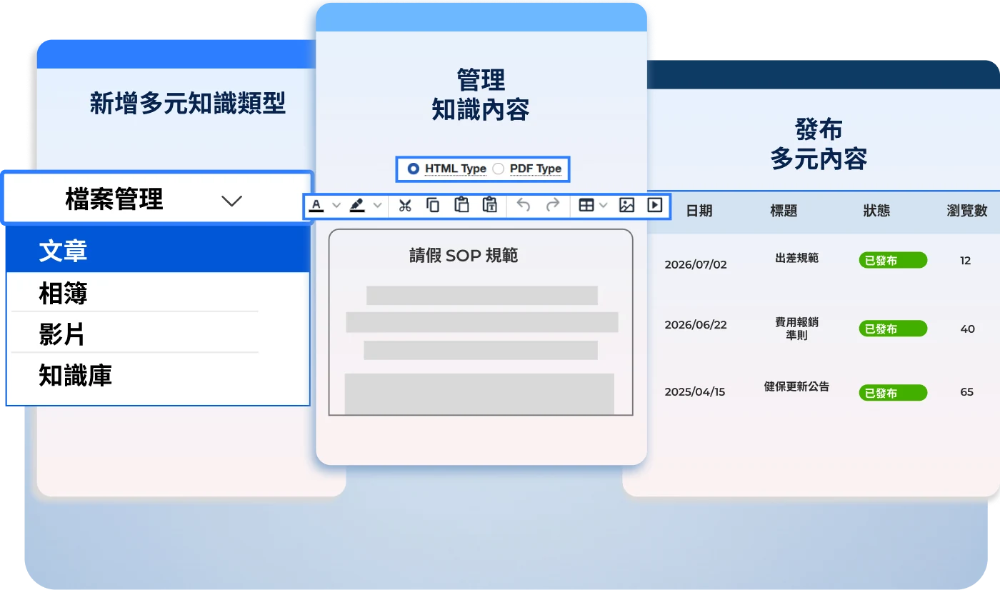
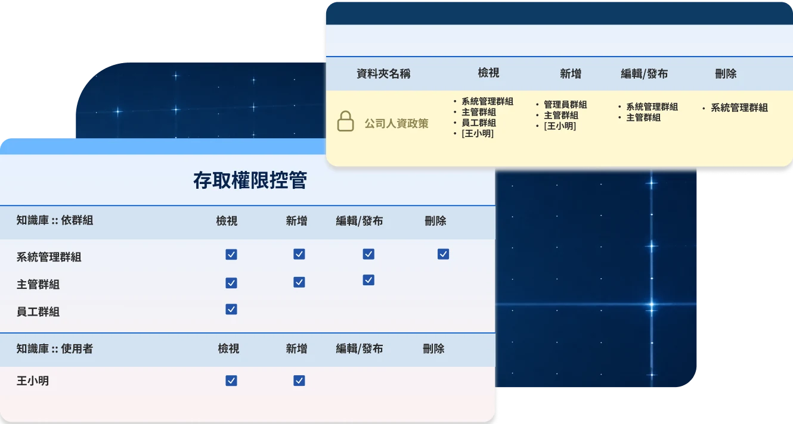
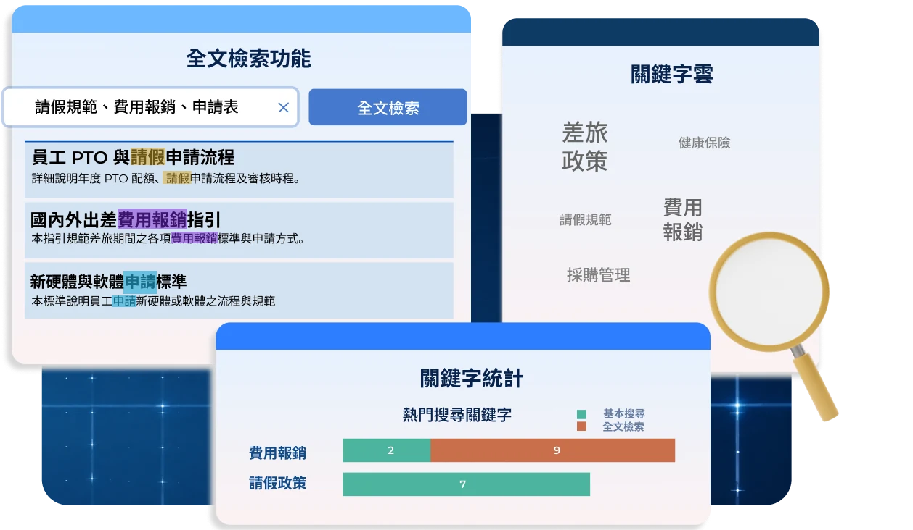
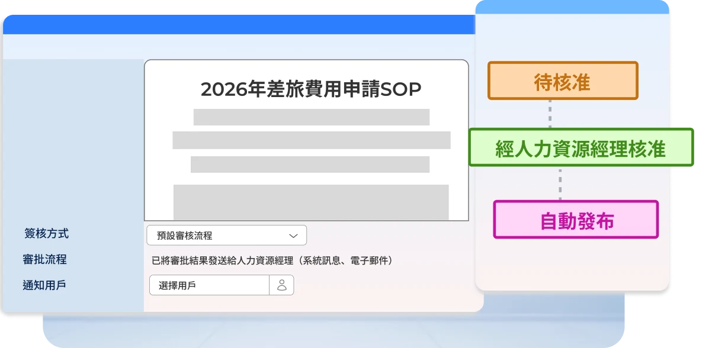
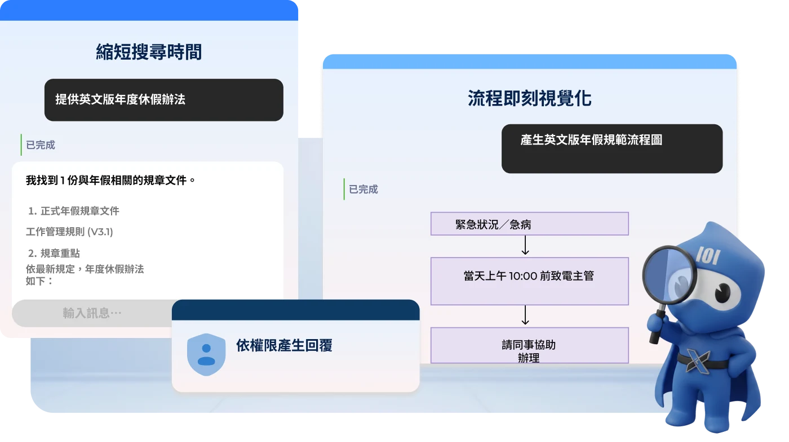
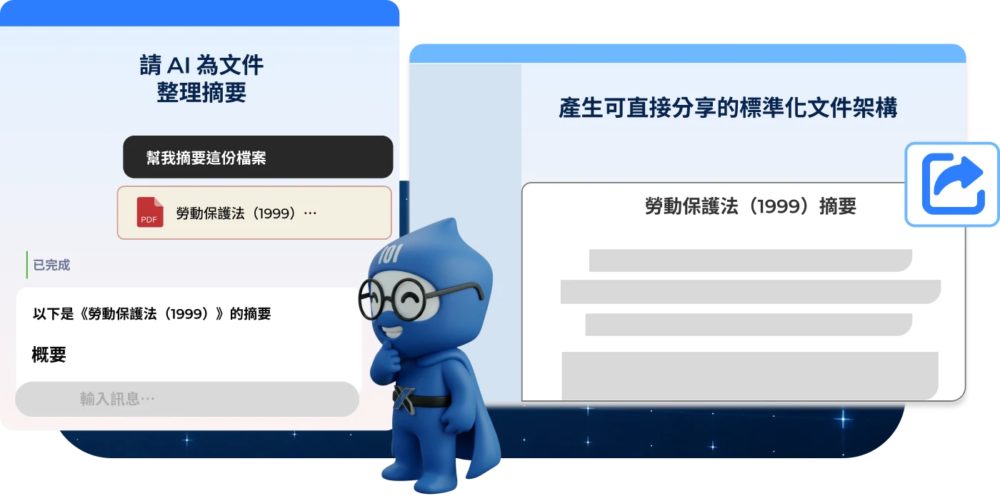
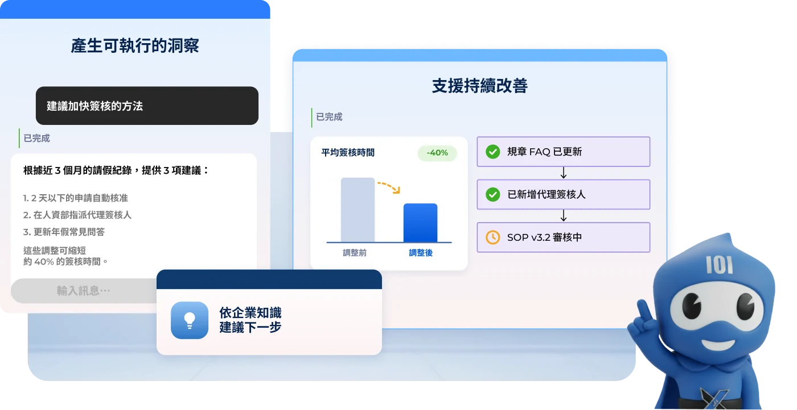

多元知識內容建立與管理
- 新增、管理與發布：提供多樣化知識內容的新增、管理與發布功能，支援文章、相簿、影音、多媒體檔案及網站連結等內容形式，滿足企業多元化的知識呈現與管理需求。
xNinja.知識管理（KM）透過建立、彙整與管理企業知識資產，協助組織有效保存與傳承關鍵 Know-how。員工可快速取得所需資訊，促進跨部門協作與知識共享、學習能力與創新競爭力。









知識管理（KM）協助企業蒐集、保存、分享及靈活運用組織內的知識資產，提升團隊協作效率、生產力及決策品質。
傳統管理方式通常是透過資料夾結構存放實體檔案，經常面臨查找困難、使用率低的挑戰。xNinja 協助企業生成與彙整知識文件，並透過 AI 驅動的智能搜尋、摘要與推薦功能，讓員工更有效率地取得所需資訊。
xNinja.知識管理能協助企業管理多元化的知識資產，包括 SOP 作業規範、操作手冊、常見問題（FAQ）等內部資源，讓員工更快速找到所需資訊，並提升組織內部的知識共享效率。